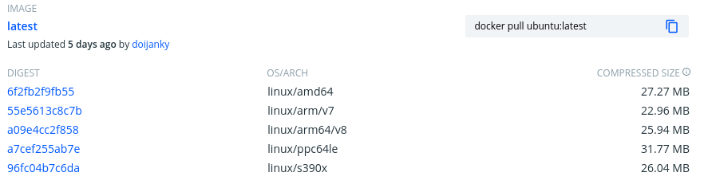
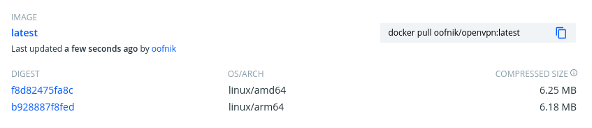

multi-architecture docker builds
Wouldn’t it be nice to have your Docker images come out of the oven ready to run on anything?
Multi-architecture Docker builds aren’t a particularly new thing, but given the rising popularity of running workloads on ARM, from people building Raspberry Pi-powered Kubernetes clusters to the growing availability of ARM-powered cloud infrastructure, it’s surprisingly difficult to find references on how to do it properly, or even at all.
This post is intended to be one of those references.
B.C. (before containers)
Prior to the advent of tools like Docker, the way an application would be packaged and distributed for multiple platforms depended heavily on the programming language(s) in which it was written – specifically, the toolchain associated with those languages. For interpreted languages like Python or Ruby, or even intermediates like Java, this wasn’t (and still isn’t) really an issue, since the machine code is generated at run time by the platform-dependent executables installed on the system running the code. But for compiled languages like C, cross-compiling can get hairy. Try building a kernel driver on your laptop for your USB Wi-Fi chip to work on your Raspberry Pi if you don’t believe me.
What happens when you want to package the code, plus the runtime, plus all of its dependencies into a container that can run anywhere? The process works a little differently.
A.D. (anno Dockeri)
A major part of the appeal of containerization is that it shouldn’t matter what language your code is written in; it should just work. It follows, then, that it shouldn’t matter how your language’s cross-compilation toolchain works, either. So the typical approach to building cross-platform Docker containers is using software emulation to pretend we’re always building on the target platform. That, plus some additional neat tricks, is how we’ll proceed.
Manifest lists
Some time in 2017, Docker introduced the schema manifest v2, which allowed a single image and tag combination to be specified for multiple architectures in a manifest list (or “fat manifest”). If you’ve ever browsed the Docker Hub and seen an entry like this, it’s using a manifest list:

A Docker daemon always knows what architecture it’s running on, and will pull only the image it knows how to run from the manifest. This is why you can docker run -it ubuntu bash both from your laptop and from your ARM-powered cloud instance and get the same result.
So how do we build a multi-architecture Docker image? And, more importantly, how do we automate it in CI?
Local
The tooling required to build multi-architecture Docker images is still experimental, so the process is a bit clunky. Hopefully that will change in the future, but in the mean time, make sure you’re running at least Docker version 19.03.
Prepare
If you’re running Docker Desktop for Mac v19.03 or later, experimental mode can be enabled under Preferences > Command Line. On Linux, you’ll need to enable experimental mode by adding the following key - value pair to your ~/.docker/config.json (create it if it doesn’t exist):
{"experimental": "enabled"}
We can accomplish that programmatically with jq:
$ jq '. += {"experimental": "enabled"}' ~/.docker/config.json > /tmp/config
$ mv /tmp/config ~/.docker/config.json
Confirm that your Docker client now has experimental superpowers:
$ docker buildx inspect --bootstrap
Name: default
Driver: docker
Nodes:
Name: default
Endpoint: default
Status: running
Platforms: linux/amd64, linux/386
You should see some information like the above, telling us a little bit about the currently selected builder instance using the legacy docker driver. The --bootstrap option ensures that the builder is booted up to make sure all the information about the builder is available.
For multi-architecture builds, create a new BuildKit builder instance and set it to the default. It should return a random whimsical name:
$ docker buildx create --use
competent_chaplygin
A lot is happening in this single command, but in short, it’s creating a new builder instance using the docker-container driver and BuildKit backend. We need this new kind of builder to build our multi-arch Docker image.
Re-run docker buildx inspect and you should see some additional output:
$ docker buildx inspect --bootstrap
Name: competent_chaplygin
Driver: docker-container
Nodes:
Name: competent_chaplygin0
Endpoint: unix:///var/run/docker.sock
Status: running
Platforms: linux/amd64, linux/386
If you’re on Mac OS, you can probably skip this next step, but Linux users will have to register additional platforms like linux/arm64, either by installing some packages or running the multiarch/qemu-user-static container in privileged mode.
This step tells the running kernel how to process binary files built for foreign architectures through the binfmt_misc interface. Only privileged containers can write to the proc filesystem of the host, which is why we need to add the --privileged flag. Artur Klauser has an outstanding write-up on this topic for more information, but luckily, the multiarch project has done brilliant work by packaging everything we need to do in one command:
$ docker run --rm --privileged multiarch/qemu-user-static --reset -p yes
And just like that, our builder becomes cross-platform capable:
$ docker buildx inspect --bootstrap
Name: competent_chaplygin
Driver: docker-container
Nodes:
Name: competent_chaplygin0
Endpoint: unix:///var/run/docker.sock
Status: running
Platforms: linux/amd64, linux/386, linux/arm64, linux/riscv64, linux/ppc64le, linux/arm/v7, linux/arm/v6
Build
Next, let’s create a simple Dockerfile to test our BuildKit builder. We’ll install openvpn, a SSL-based VPN:
$ cat <<EOF > Dockerfile
FROM alpine:latest
RUN apk update && apk add openvpn
ENTRYPOINT ["/usr/sbin/openvpn"]
EOF
Normally we’d build this image with docker build -t openvpn . , but the syntax for the BuildKit builder is a little different:
$ docker buildx build -t openvpn --platform linux/amd64,linux/arm64 .
You’ll notice that the output of the BuildKit builder looks a little different too.
It took me a while to realize that it’s not possible to actually load multi-arch images directly into the local Docker daemon; they must first be pushed to a registry. Once the image has been uploaded, a client comes along and issues a docker pull command, which will only pull down the image for the relevant architecture.
There are plenty of services that offer free container registries such as Docker Hub or GitLab. I’m going to assume you’ve got something already set up at docker.io/<youruser>, so replace that with your actual image repository prefix in the following steps. Just make sure that if you’re pushing containers to public registries, you’re not including any sensitive data like passwords or API keys.
Actually, that goes for private registries too. Secrets in Docker images are no less bad than secrets in Git. Unless they’re encrypted, just don’t do it.
Note that with Docker Hub, the docker.io prefix can be omitted.
With docker buildx, you build and push the image in one go:
$ docker buildx build -t docker.io/<youruser>/openvpn --platform linux/amd64,linux/arm64 . --push
If all goes as planned, Docker will have built your image for each architecture specified in a comma-separated list, in parallel, and push each container image with the default latest tag, all as a single manifest.
A couple of things to note here. The foreign architectures will take significantly longer than the native builds (i.e. building a linux/arm64 image on an Intel / AMD machine) because the machine instructions are actually being translated in real-time by QEMU, a software-based processor emulator, as the container is being built.
If you run ps during the build, you will see something like this:
$ ps -ef | grep qemu
root 10151 10128 2 06:20 ? 00:00:00 /usr/bin/qemu-aarch64-static /bin/sh -c apk update && apk add openvpn
root 10168 10151 28 06:20 ? 00:00:00 /usr/bin/qemu-aarch64-static /sbin/apk update
It works sort of like the JVM, but for ARM or PowerPC instead of Java bytecode. Amazing.
Checking our registry, we should now see something like this:

We just pushed our first multi-architecture Docker image. Solid!
Run
If we can build foreign architectures, surely we can run them, too, you ask? Well, earlier we enabled experimental mode for the Docker client. Now we need to enable it for the daemon.
Add the following key - value pair to /etc/docker/daemon.json (again, create it if it doesn’t exist):
{"experimental": true}
That’s not a typo. The daemon expects boolean value true while the client expects the string value "enabled".
Docker devs, if you’re reading this, a little consistency please before this goes GA would be much appreciated.
Next, we have to restart our Docker daemon. If you’re running Docker with systemd:
$ sudo systemctl restart docker
Now we can pull our multi-arch image back down from our registry, forcing Docker to pull the specified platform:
$ docker pull <username>/openvpn --platform linux/arm64
If we run this image with the --version parameter, OpenVPN will print out the architecture for which it was compiled, which is why I’ve used it for this example:
$ docker run --rm <youruser>/openvpn --version
OpenVPN 2.4.9 aarch64-alpine-linux-musl [SSL (OpenSSL)] [LZO] [LZ4] [EPOLL] [MH/PKTINFO] [AEAD] built on Apr 20 2020
GitLab
Now that we’ve seen how to handle multi-architecture Docker images locally, let’s set up a remote build system to build it for us. I’ll use GitLab for this guide, but these instructions should translate fairly easily to any other CI/CD automation platforms.
It’s probably best to put the full example here and work backwards, explaining what each part does:
|
|
First of all, we’re running that same multiarch/qemu-user-static container from before to register our foreign binary formats with the kernel. Note that your GitLab runner must allow running containers in privileged mode for this to work. GitLab shared runners allow this, but if you’re using your own runners, privileged containers must be explicitly allowed in the runner configuration.
Next up, I’m using a custom Docker image I’ve built based on the official docker:latest image which includes the buildx plugin. The source is available here.
The final interesting bit is the introduction of two additional command-line arguments:
--cache-from "$CI_IMAGE" --build-arg BUILDKIT_INLINE_CACHE=1
These arguments speed up the build considerably by (a) downloading the previously built image to the local runner to make it available to the build cache, and (b) telling BuildKit that we want the build cache to be included in the final artifact for all subsequent runs. More on that here.
Besides a few custom environment variables I’ve defined as variables in my project for my Docker Hub username and token, that’s about it.
Resources
- https://nexus.eddiesinentropy.net/2020/01/12/Building-Multi-architecture-Docker-Images-With-Buildx/
- https://github.com/docker/distribution/blob/master/docs/spec/manifest-v2-2.md
- https://www.auroria.io/docker-multi-architecture-builds-with-gitlab-runner/
- https://github.com/moby/buildkit#export-cache
- https://testdriven.io/blog/faster-ci-builds-with-docker-cache/
- https://www.docker.com/blog/multi-arch-build-what-about-gitlab-ci/
- https://github.com/docker/buildx#–load
- https://www.docker.com/blog/multi-arch-images/
- https://hub.docker.com/r/multiarch/qemu-user-static
- https://eyskens.me/multiarch-docker-images/
- https://gitlab.com/gitlab-org/gitlab-runner/-/merge_requests/1861
- https://stackoverflow.com/questions/61430005/gitlab-ci-cd-building-multiarch-docker-images/63555735
- https://github.com/oofnikj/docker-buildx
- https://github.com/docker/buildx/issues/94